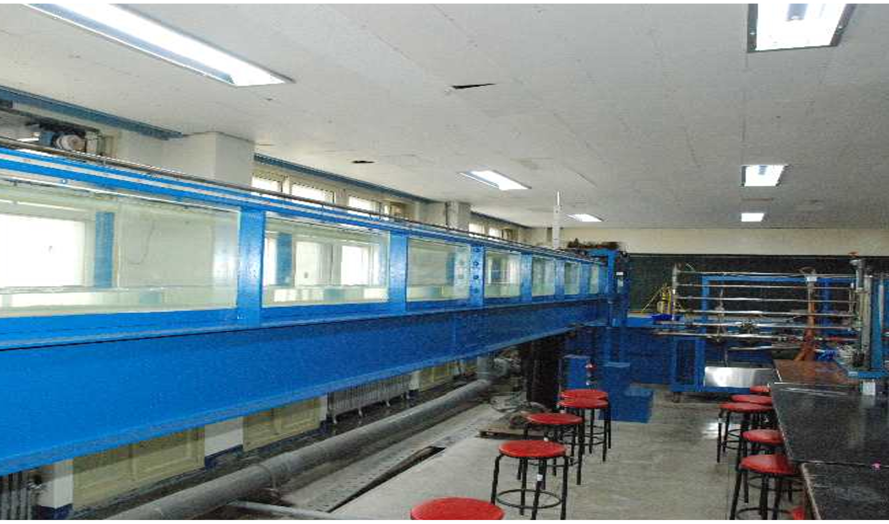
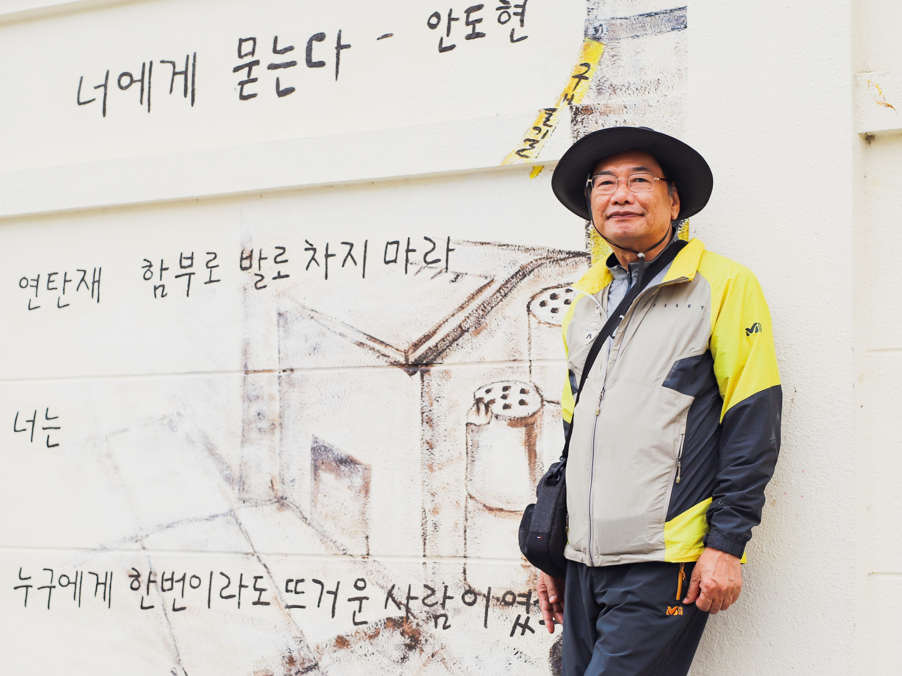
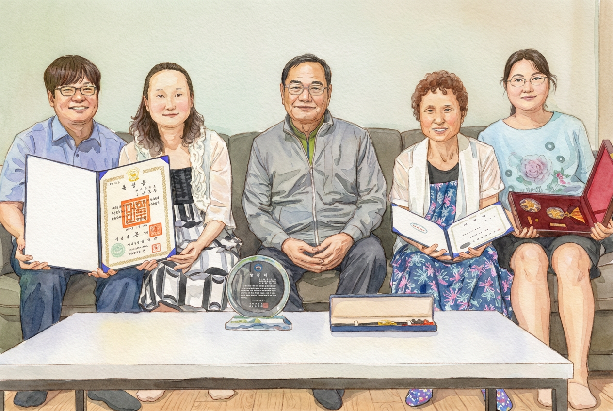

जीवनी

- 1952
- दक्षिण कोरिया के उत्तरी जल्ला प्रांत, गोछांग-गुन, सांगहा-म्यन में जन्म
- 1958 – 1970
- जंगउप के देहुंग प्राथमिक विद्यालय, होनाम माध्यमिक विद्यालय और होनाम उच्च विद्यालय से शिक्षा पूरी की
- 1974
- सिविल इंजीनियरिंग में स्नातक (B.S.), जनबुक राष्ट्रीय विश्वविद्यालय
- 1974 – 1978
- गणित शिक्षक, थेइन माध्यमिक एवं उच्च विद्यालय
- 1978 – 1980
- सिविल इंजीनियरिंग के प्रोफ़ेसर, गुनसान प्रौद्योगिकी महाविद्यालय
- 1979
- सिविल इंजीनियरिंग में स्नातकोत्तर (M.S.), जनबुक राष्ट्रीय विश्वविद्यालय
- 1980 – 1993
- समुद्री सिविल इंजीनियरिंग के प्रोफ़ेसर, राष्ट्रीय गुनसान मत्स्य महाविद्यालय
- 1986 – 1987
- अतिथि प्रोफ़ेसर, समुद्री सिविल इंजीनियरिंग विभाग, तोकाई विश्वविद्यालय, जापान
- 1990
- जल-अभियांत्रिकी में पीएच.डी., जनबुक राष्ट्रीय विश्वविद्यालय
- 1990 – 1991
- कोरिया-जर्मनी तकनीकी सहयोग कार्यक्रम के अंतर्गत प्रतिनियुक्त प्रोफ़ेसर
- 1993 – 2020
- सिविल इंजीनियरिंग के प्रोफ़ेसर, गुनसान राष्ट्रीय विश्वविद्यालय
- 2020
- गुनसान राष्ट्रीय विश्वविद्यालय से सेवानिवृत्त — 46 वर्ष की सेवा, नागरिक सेवा पदक (पीत पट्टिका) से सम्मानित
- 2024
- देहावसान
शोध और प्रकाशन

- 1979. 8
- स्नातकोत्तर शोध-प्रबंध — "वितरण नेटवर्क में पाइप-व्यास के किफ़ायती निर्धारण पर एक अध्ययन," जनबुक राष्ट्रीय विश्वविद्यालय
- 1990. 8
- डॉक्टरेट शोध-प्रबंध — "द्वि-आयामी ज्वारीय मॉडल में सीमा-अनुरूप निर्देशांक प्रणाली का अनुप्रयोग और प्राचल-निर्धारण," जनबुक राष्ट्रीय विश्वविद्यालय
छायांकन

- 2017
- छायांकन का आरंभ — Canon EOS 6D Mark II ख़रीदा
- 2018
- गुनसान आजीवन शिक्षा केंद्र में जल-प्रकाश छायांकन सीखा
- 2019
- Intermediate photography course at Kunsan National University Lifelong Education Center; exhibited at the 5th annual exhibition Water Light Lyricism
- 2019
- राष्ट्रीय छायाचित्र प्रतियोगिताओं में 14 बार और राष्ट्रीय छायांकन स्पर्धाओं में 8 बार चयनित
- 2019
- क्षितिज महोत्सव राष्ट्रीय छायांकन स्पर्धा में कांस्य पुरस्कार
- 2020 – 2021
- उपाध्यक्ष, गुनसान जल-प्रकाश छायांकन संघ
परिवार

- 1977. 12
- विवाह
- 1978. 9
- पहली बेटी का जन्म
- 1979. 11
- दूसरी बेटी का जन्म
- 1985. 2
- बेटे का जन्म
स्मृति-स्थल
यंगवोलदांग, दालमासा मंदिर (कोरियाई बौद्ध धर्म का जोग्ये संप्रदाय)
50-26, सदाल-रो, दोंगजाक-गु, सियोल, कोरिया गणराज्य